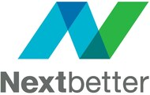
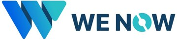
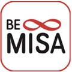
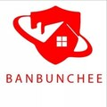

Healthcare
Telemedicine
ออกแบบบริการและการเชื่อมต่อประสบการณ์ผู้ใช้ในบริบทสุขภาพดิจิทัล
Master Learning Programme
Outcomes That Matter

Selected Learning & Collaboration Experience
ประสบการณ์จากโจทย์จริงที่เชื่อมคน งาน บริการ เทคโนโลยี และการเปลี่ยนแปลงในองค์กร
ออกแบบบริการและการเชื่อมต่อประสบการณ์ผู้ใช้ในบริบทสุขภาพดิจิทัล

พัฒนาวิธีทำงานและมาตรฐานบริการให้รองรับการทำงานหลายสาขา

เชื่อมคุณภาพ กระบวนการ และการตัดสินใจให้ทำงานเป็นระบบเดียวกัน

ทำงานกับบริบทที่ต้องอาศัยความรู้เฉพาะทาง ความน่าเชื่อถือ และความแม่นยำสูง

ลดงานซ้ำ จัดระบบข้อมูล และทำให้ทีมมี working assets ที่นำกลับมาใช้ได้จริง
Selected learning & collaboration organisations




Industries
About RELEARNOS
RELEARNOS คือ learning practice ที่เชื่อมความสามารถของคน งานบริการ และการเปลี่ยนแปลงอย่างมีความหมาย เพื่อสร้าง Future Citizens ที่มีคุณภาพ
เราออกแบบการเรียนรู้ให้เริ่มจากบริบทของคนและงาน ใช้กรอบ RELEARNOS เพื่อเปลี่ยนความรู้ให้กลายเป็นความสามารถและความก้าวหน้าที่วัดได้
AI เป็นส่วนหนึ่งของการพัฒนา ไม่ใช่จุดหมายทั้งหมด เราใช้เทคโนโลยีเพื่อเสริมวิจารณญาณ คุณภาพงาน และคุณค่าที่มนุษย์สร้างได้
Founder Spotlight
CONTACT